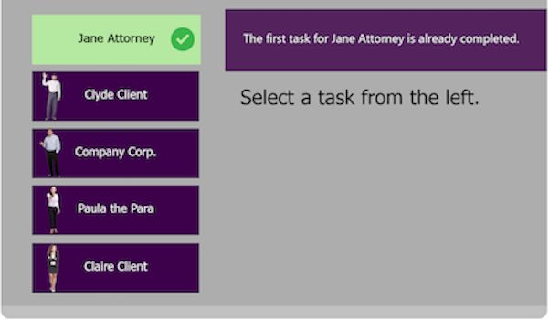
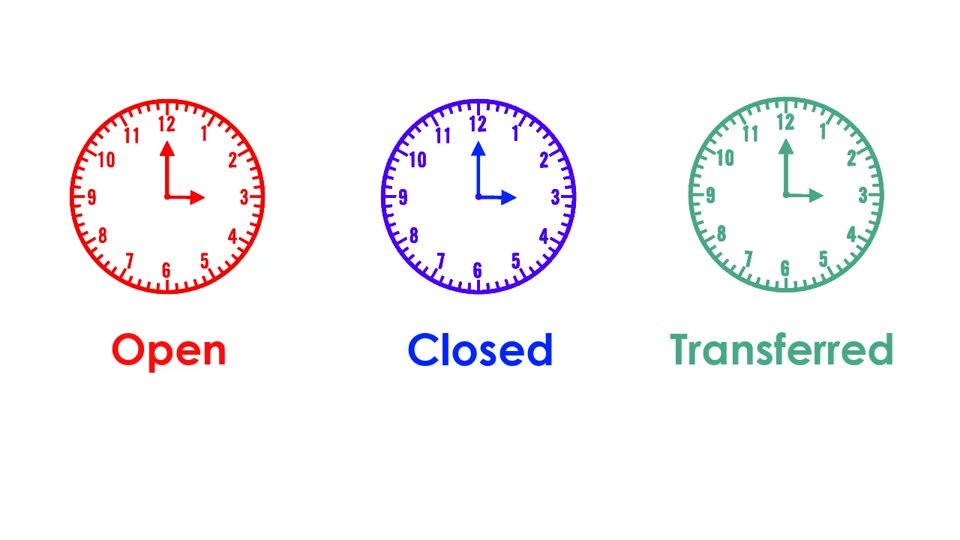
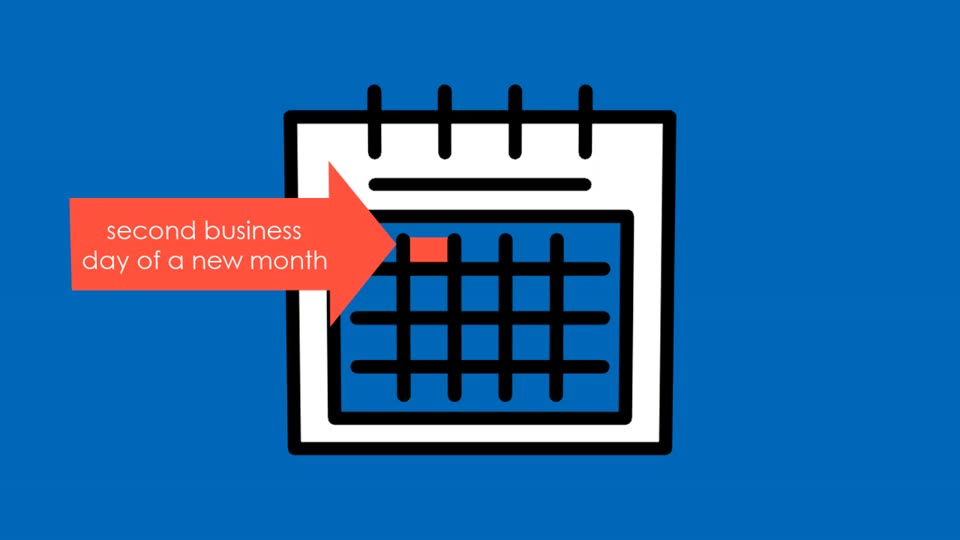
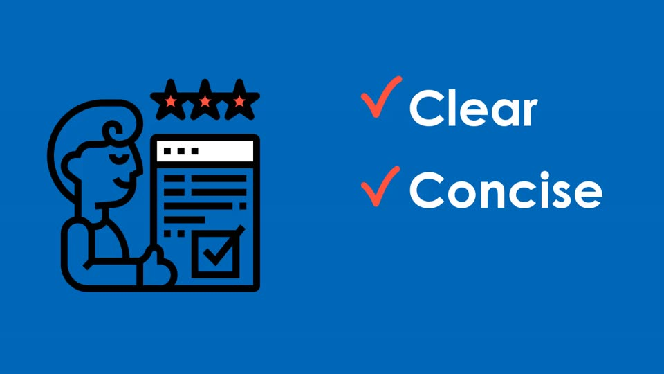
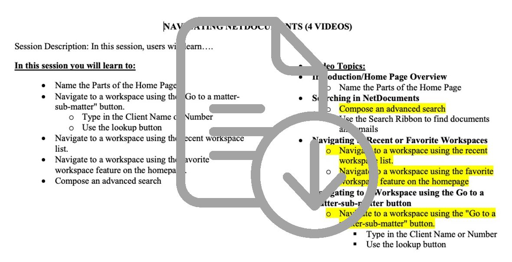
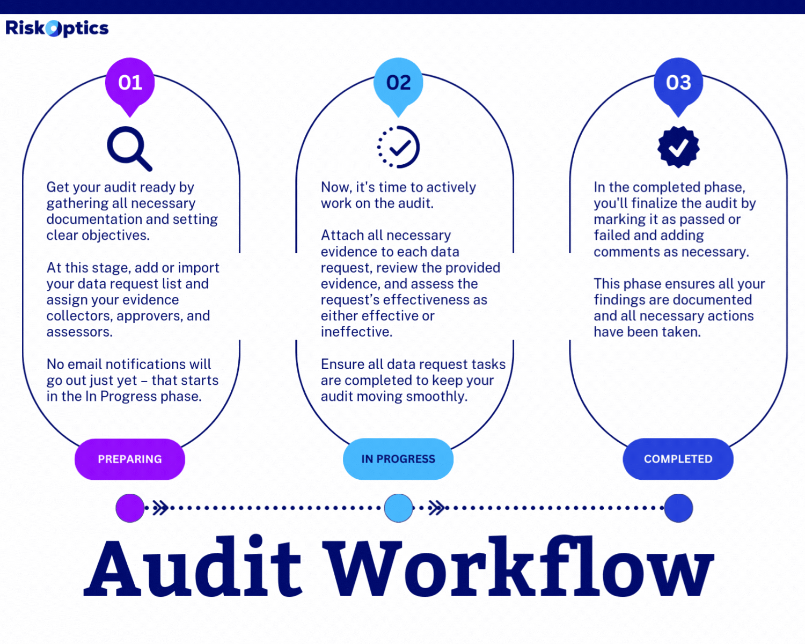
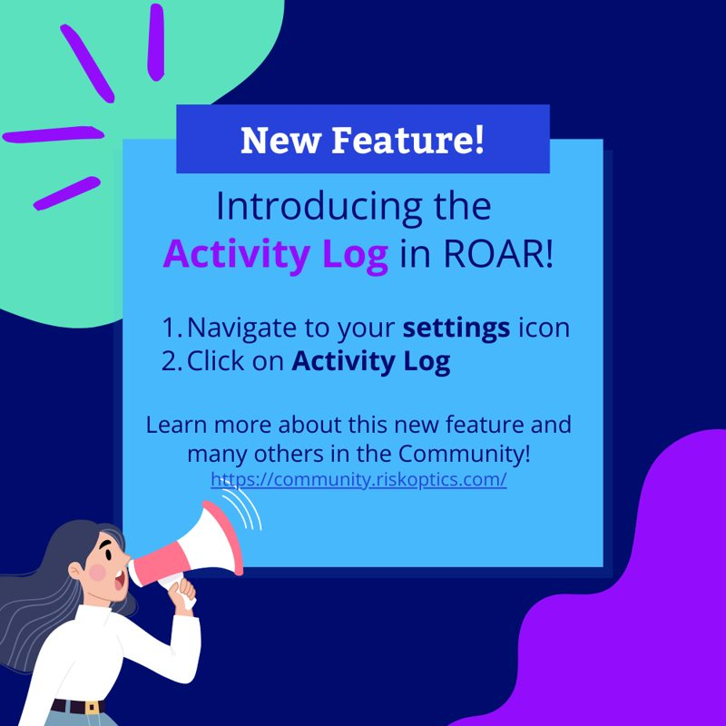
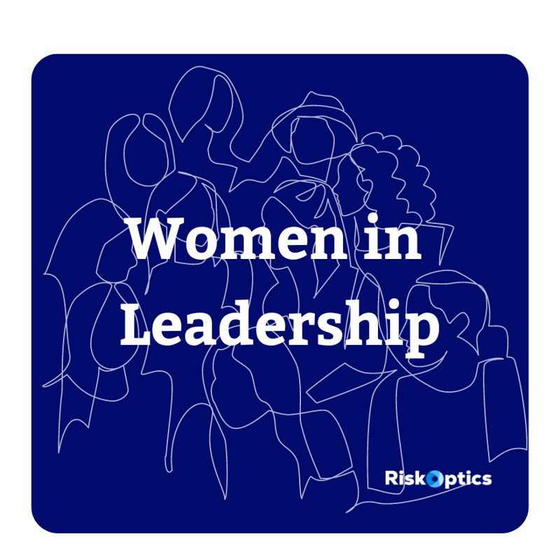
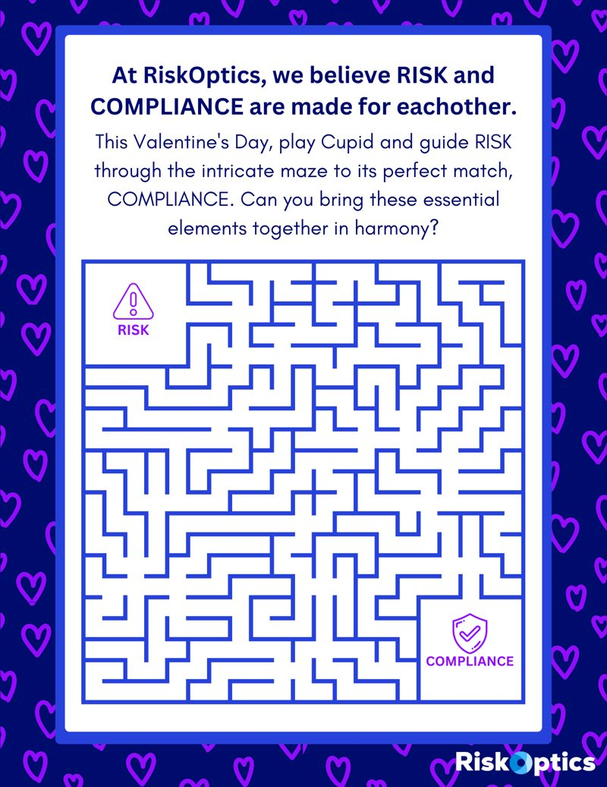
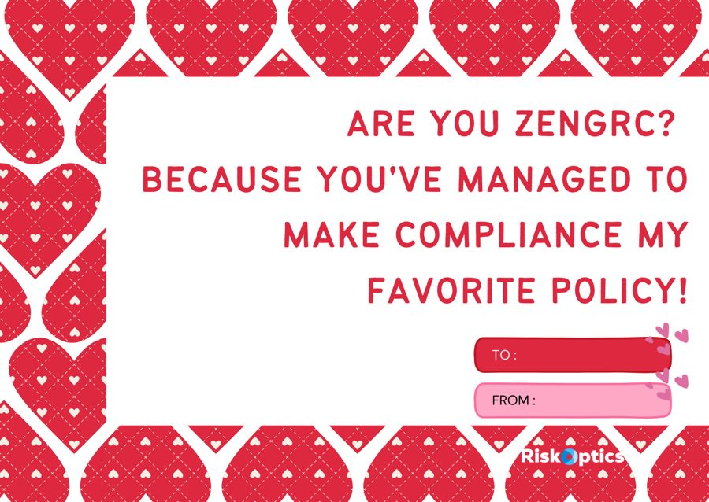

Generac, gamified eLearning
Adapting to Change
Scenario-based eLearning where employees practice what to do at each stage of change through five arcade-style mini-games.
- 1,430 completions
- 8% abandon rate
- 5 mini-games
Gamified eLearning, live leadership sessions, product adoption programs, and the videos and graphics that support them.
Each one has a full case study. Want to see a course in action? Ask me for a live walkthrough.
Generac, gamified eLearning
Scenario-based eLearning where employees practice what to do at each stage of change through five arcade-style mini-games.
Generac, AI literacy
A self-paced course that takes employees from “what is AI?” to writing a useful prompt, with a focus on using AI safely and responsibly.
Generac, leadership development
A highly interactive 60-minute virtual session where people leaders practice coaching their teams through change, using realistic employee personas.
ZenGRC, product adoption and enablement
In-app guidance, microlearning, and a rebuilt knowledge base that helped customers and go-to-market teams adopt new features faster.
Foley & Lardner, gamified skills assessment
A firm-wide, gamified skills program for legal assistants, including an adventure-themed course on the firm’s document management system.
Videos, earlier courses, and graphics from ZenGRC and Foley & Lardner.
A welcome video for new customers covering the features to learn first, part of the onboarding pages I built in the customer community.
A promo teasing an upcoming customer API, made for product marketing.
A reusable Camtasia template that turned webinar and interview recordings into polished videos.

A task-based course completed by 460+ people in its first 4 months.



A visual walkthrough of the firm’s time and billing system, viewed by about 300 people. Stills from the animation.

Planning behind demo videos used in new hire orientation and the enrichment program. Word document.
A short promo for the L&D department, shown at meetings and on the intranet, following the video branding guidelines I designed.





Looking for someone to design learning people actually want to finish? I’d love to hear what you’re working on.